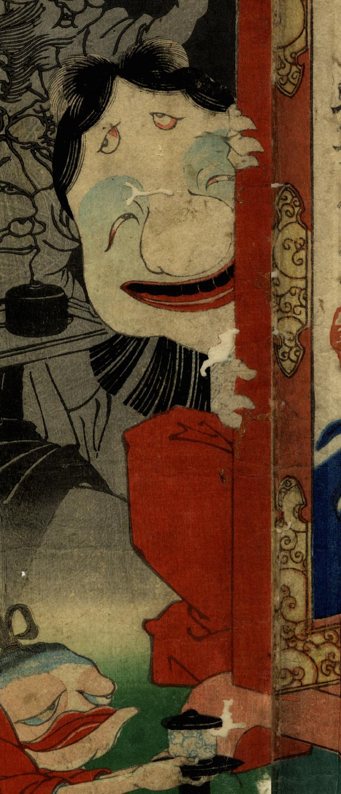

衝立の陰から覗く女の化物。顔が大きく色白である。緋袴をはいている。鼻が大きくオハグロをつけ笑っている。額にも目がある。
著作者：一魁齋芳年／出典：親書誌：U426_nichibunken_0286：於吹島之館直之古狸退治図；フクシマ ノ ヤカタ ニオイテ ナオユキ コリ オ タイジ ル ズ／日付：2014／資源識別子：U426_nichibunken_0286_0003_0000
Copyright (c)2010- International Research Center for Japanese Studies, Kyoto, Japan. All rights reserved.